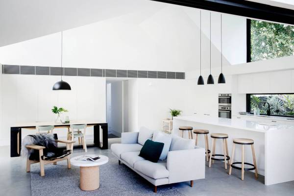

继2014年深圳市政府工作报告中首次提出“发展湾区经济”之后，在今年珠三角各地市召开的两会上，融入或对接“粤港澳大湾区”被写入了佛山、肇庆、江门、东莞、珠海等多地的政府工作报告。
这意味着，打造湾区经济将成为下一阶段珠三角地区的重要发展战略。作为首个国家明确定义的“湾区”，珠三角湾区也承担着为全国一些沿海地区发展湾区经济探路的重任。
珠三角“湾区”
在国际上，“湾区”一词多用于描述围绕沿海口岸分布的众多海港和城镇所构成的港口群和城镇群，而衍生的经济效应则称之为“湾区经济”。
国家发改委于上月印发的《加快城市群规划编制工作的通知》提出，2017年拟启动珠三角湾区、海峡西岸、关中平原、兰州-西宁、呼包鄂榆等跨省域城市群规划编制。
“珠三角”或“珠三角地区”表述为“珠三角湾区”，这在国家文件中首次出现。国家发改委有关负责人表示，“珠三角湾区”城市群将把珠三角9市和香港、澳门作为一个整体来规划，由国家发改委牵头，会同粤港澳地区共同编制，最后由国务院批准。
事实上，“湾区”的概念并非首次提出。我国一些港口发达的城市，如广州、上海、深圳、珠海、东莞、台州等，早已加入发展湾区经济的行列。
暨南大学教授、华南城市研究会会长胡刚在接受记者采访时认为，此次发改委文件的提法，符合我国高新技术总的发展战略，将带动国家经济转型升级。“和过去不同，高科技的发展需要依靠高科技人才，人才喜欢集聚在气候环境条件好的地方，这样的地方就是湾区。正如旧金山湾区，因气候环境宜人集聚了高科技人才，故科技发展迅猛，这一点引起了世界的关注，同样也引起了中国的关注。”
GDP总量超西班牙

不仅是珠三角，我国还有渤海湾、杭州湾、胶州湾、北部湾等众多湾区。其中，目前发展比较好的是以北京和天津为“双核”的环渤海湾区，以上海为核心的杭州湾湾区和珠三角湾区。
“相对来说，珠三角湾区的城市人口密度高，所含的11个城市发展均已进入较为成熟的阶段，而且珠三角的科技发展要素更加全面——既有强劲的高科技，也有传统的制造业、服务业等。”胡刚分析道。
广东省体制改革研究会副会长、广州市社会科学院高级研究员彭澎则认为，因为港澳，珠三角湾区和国际对接更为便利，这也是其优势。
作为全球第二大经济体的首个国家层面确认的湾区，珠三角湾区更是被寄予了对标世界级湾区的厚望。
上述国家发改委有关负责人提到，从世界各国城市群发展的空间格局来看，沿海湾区城市群是发展条件最好、最具有竞争力的城市群。珠三角湾区城市群最具有这样的国际化特征。他认为，珠三角湾区今后会是世界上最发达的城市群地区，也是创新能力最强和最开放的城市群地区。
记者梳理各地统计局和国际货币基金组织的数据发现，2011年到2015年，珠三角湾区的地区生产总值逐年上升，从2011年的6.24万亿元人民币增长至8.44万亿元，约合1.22万亿美元。这一数值与2015年排名第13位的经济体澳大利亚的国内生产总值相当，超过排名第十四位的西班牙238亿美元，相差排名第十二位的俄罗斯1000亿美元。
应重视湾区“宜居”
相比对标的三大世界级湾区，珠三角湾区的产业存在结构单一和科研能力不足的问题。胡刚表示，珠三角湾区的产业结构还是偏向于劳动密集型，传统制造业占主体，同时，在高科技产业上仍有一定的差距。
“深圳的高科技主要是应用型技术，它的原创性技术、研发能力离旧金山湾区的硅谷还有很大的差距。整个珠三角湾区的科研、创新创业环境也还有待完善。不过，珠三角湾区在产业分工上已较为明确。”胡刚说。
另一方面，在打造湾区经济的过程中，一体化建设既是重点也是难点。“湾区”比“地区”城市间的界限更模糊，更强调融合发展，比如基础设施互通、公共服务均等、消费水平相当。
此外，作为湾区的第三大标签，珠三角湾区还不够“宜居”。广东省政协委员李志明就对记者表示，政府所有的决策都应当以“人”为中心，从居民的需求出发，这样方向才不会错。